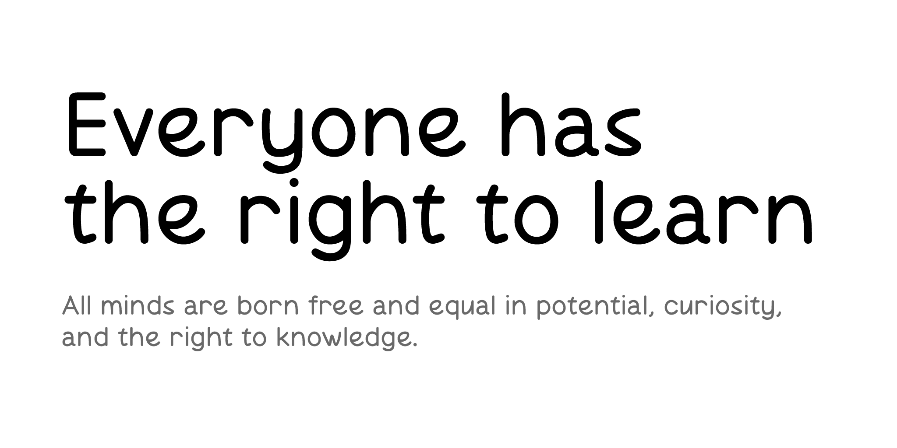
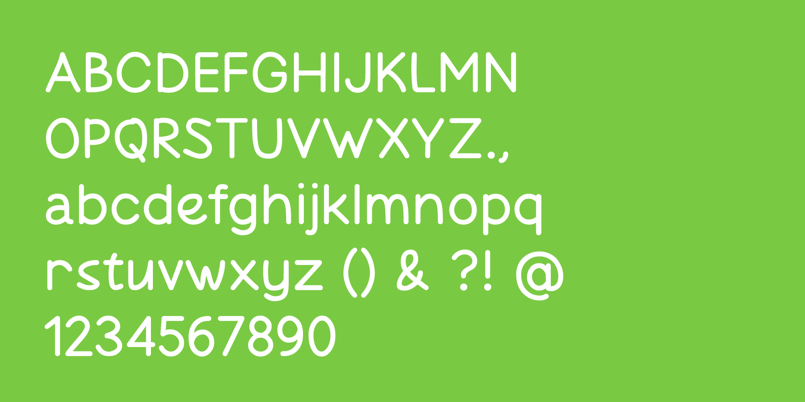

Lesca is a modern geometric sans-serif typeface with an open and friendly character.
The typeface is built on a combination of clean geometric proportions, soft rounded stroke terminals, and smoothed corners. Thanks to its clear underlying construction, Lesca maintains excellent legibility and an even text rhythm while bringing a relaxed, lively, and approachable tone to typography.
Lesca is designed for a wide range of applications from web interfaces and mobile apps to posters, signage, game design, and branding projects where lightness, modernity, and accessibility are key.
Its rounded forms and balanced geometry make it suitable for educational, inclusive, and creative contexts. The design emphasizes clarity and warmth, aiming to make reading comfortable and engaging for all audiences.
Below are examples of Lesca in use:


To contribute, see github.com/ballmax/lesca.